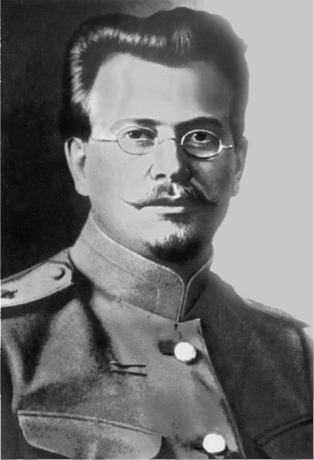

Николай Павлович Кравков
8 марта 1865 - 24 апреля 1924
Аудитория 213
Открыта 21 декабря 2016 года
8 марта 1865 - 24 апреля 1924
Открыта 21 декабря 2016 года
Николай Павлович Кравков родился 24 февраля (8 марта) 1865 года в Рязани в семье унтер-офицера Павла Алексеевича Кравкова (1826-1910), служившего старшим писарем в Управлении Рязанского губернского воинского начальника.
В 1884 году Н. П. Кравков окончил Рязанскую 1-ю мужскую гимназию.
В 1884-1888 годах он учился на естественном отделении физико-математического факультета Санкт-Петербургского университета. В 1888 году Н. П. Кравков поступил на 2-й курс Военномедицинской академии, которую окончил в 1892 году с золотой медалью. Был оставлен при академии для подготовки к защите диссертации.
Н. П. Кравков работал в лабораториях известных ученых И. М. Сеченова и В. В. Пашутина, в 1894 году защитил докторскую диссертацию «Об амилоиде, экспериментально вызываемом у животных». Последующие два года он провел в заграничной командировке по линии Военно-медицинской академии, смог познакомиться с работой многих лабораторий знаменитых европейских ученых.
В 1898 году Н. П. Кравков получил звание приватдоцента (нештатного преподавателя) Военномедицинской академии по общей и экспериментальной патологии. В 1899 году он был назначен экстраординарным профессором кафедры фармакологии ВМА. В 1904 году Н. П. Кравков получил звание ординарного (штатного) профессора и одновременно был назначен заведующим кафедрой фармакологии ВМА, которую возглавлял до конца жизни.
В 1914 году Н. П. Кравков был избран академиком Военномедицинской академии. До Октябрьской революции 1917 года Н. П. Кравков имел чин действительного статского советника (соответствовал армейскому генерал-майору), был кавалером орденов Святой Анны 3-й степени и Святого Владимира 4-й и 3-й степеней. В 1920 году, уже при Советской власти, он стал членом-корреспондентом Российской Академии наук.
С именем Н. П. Кравкова связано становление и развитие в России фармакологии как самостоятельной научной дисциплины. Своими фундаментальными открытиями в этой области он обогатил русскую и мировую науку, внес большой вклад в развитие биологии, физиологии и патологии.
Н. П. Кравков является основателем ряда разделов фармакологии, в частности сравнительной эволюционной фармакологии патологических процессов, основоположником отечественной промышленной и военной токсикологии. Особенно важную роль он сыграл в развитии клинической фармакологии, которая во многом благодаря ему сформировалось как наука. Созданный Н. П. Кравковым учебник «Основы фармакологии» (1904) стал классическим и переиздавался 14 раз.